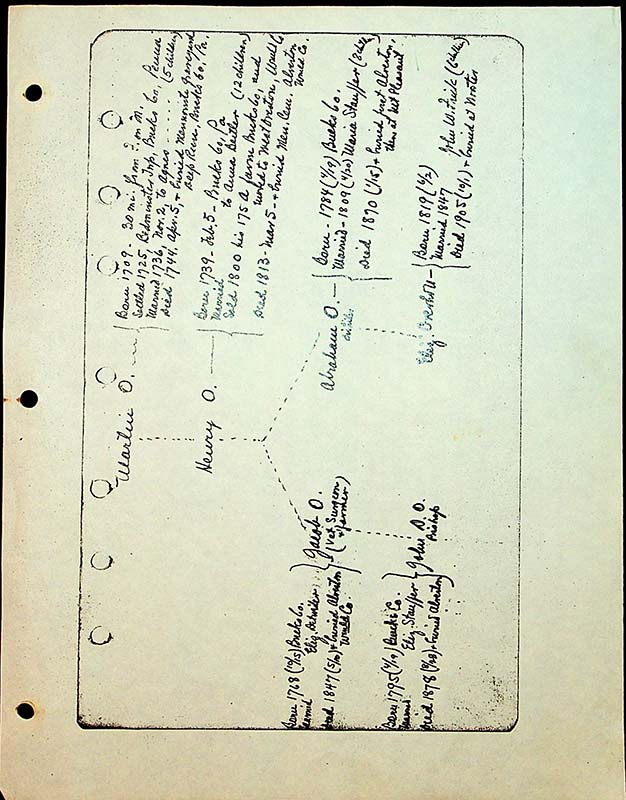

| Matin O. | —Born 1709 30 mi from F. on M. Settled 1725 Bedminster Twp, Bucks Co, Penna. Married 1736, Nov. 2, to Agnes….(5 children) Died 1744, Apr. 5, & buried Mennonite graveyard, Deep Run, Bucks Co, Pa. |
|||
| Henry O. | ----born 1739, Feb.5, Bucks Co, Pa. Married to Anna Beitler (12 children) Sold 1800 his 175 a farm Bucks Co, and moved to West Overton, Wmld. Co. Died 1813, Mar 5- & buried Men. Cem. Alverton, Wmld. Co. |
|||
| Jacob O. (vet surgeon and farmer) Born 1768 (10/15), Bucks Co. Married Elizabeth Detwiler Died 1847 (5/10) & buried Alverton, Wmld. Co. |
Jacob O. | Abraham O. distiller |
Born 1784 (4/19) Bucks C. Married 1809 (4/20) Maria Stauffer (8 children) Died 1870 (1/15) & buried first Alverton then at Mt. Pleasant |
|
Born 1795 (4/19) Bucks Co. Married Elizabeth Stuaffer Died 1878 (8/28) & buried Alverton |
John D. O. | Elizabeth Overholt | born 1819 (6/2) Married 1847 John W. Frick (6 children) Died 1905 (10/1) & buried at Wooster |